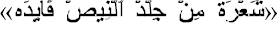

Араб
әзіл-оспағы
Арабтар
– этникалық тамыры ортақ, психологиясы ұқсас, Таяу және Орта Шығыстың жиырма екі
мемлекетінің өкілдері. Бұл
байқағыштығымен, тапқырлығымен, достығымен ерекшеленетін өмірге құштар және
көңілді адамдар. Сонымен қатар, оларда бастамашылық пен іскерлік сирек
кездесетін қасиет, ал болашаққа қатысты көрегендік, немқұрайлылық және бейқамдық
олардың өмірі мен қызметінде көптеген қиындықтарды
тудырады.
Еңбексүйгіштік
– араб мемлекеттері халқының басым көпшілігіне тән қасиет. Арабтар ыстықта да,
суықта да, лайсаң балшықта және құрғақ егістікте ауыр жұмыс істейді, көбінесе
ашқұрсақ жүре береді. Ал парасаттылық, тәжірибе мен ата-бабадан қалған инстинкт
олардан үлкен күш-жігерді талап етеді. Сондай-ақ арабтар ешқашан жұмысынан
қанағат алмаған, өйткені олар үшін жұмыс әрқашан ауыр міндет болған. Сондықтан
олардың тынымсыз еңбегінің өзіндік ерекшелігі бар. Ұзақ уақыт отарлық езгіде
болған басқа халықтар сияқты арабтарда да ол тәртіптілікпен, педантизммен,
ұқыптылықпен ұштаспайды.
Ерекше
қиын өмір сүру жағдайларының өзі-ақ арабтарды қиындықтар мен кедергілерге
сабырлы түрде төтеп беруге үйретті және олардың бойында қарапайымдылық,
ұстамдылық, кез келген жағдайға тез бейімделу және шыдамдылық сияқты ұлттық
сипаттағы қасиеттерді күшейтті.
Осындай қасиеттерімен қатар олар өмірге
деген ерекше сүйіспеншілікпен, бейбітшілікпен, кешірімділікпен, көпшілдікпен,
қонақжайлылықпен, әзіл-қалжыңымен ерекшеленеді.
Лексикалық
және синтаксистік қайталаулармен, гиперболалармен, метафоралармен және сөйлеудің
ерекше ырғақтық және интонациялық құрылымымен сипатталатын араб тілінің әсерінен
арабтарда қоршаған шындықты қабылдау нәтижелерін бағалауда асыра сілтеу үрдісі
дамыған. Алынған ақпаратты логикалық түсіну, бірақ баяндау формасына, сөйлеу
мәнеріне, сөйлеушінің шешендігіне назар аудару соншалықты
басым.
Олар
қатаң логика мен объективті дәлелдерді ұнатпайды, араб үшін ең бастысы афоризм
мен әртүрлі әсерлер бағаланады. Олар реактивтіліктің жоғарылауымен,
импульсивтілікпен, шапшаңдықпен, сезімдер мен эмоцияларды білдіруде
ұстамдылықтың болмауымен сипатталады. Мұсылмандық доктринасы, оның арабтар
арасында ғасырлар бойы қондырылған мораль, Құран белгілеген моральдық
нормалардың адамдар үшін абсолютті маңыздылығына негізделген.
Исламның
адамгершілік мұраты – мәңгілік тәубеге келген күнәһар, ол өзінің дұғасы мен
тақуалық мінез-құлқы арқылы Алла Тағаланың рақымына ие болуға ұмтылады.
Сондықтан, арабтарға бала кезінен-ақ жәннатқа ең ұнайтыны – Құдайдан қорқатын,
тағдыр тауқыметін көрген адам деп үйретеді. Міне, осындай адамгершілік мұратқа
сай арабтар сан ғасырлар бойы мойынсұнушылықты, кішіпейілділікті, байсалдылықты,
қарапайымдылықты, бейімделгіштік пен шыдамдылықты бойына
сіңірді.
Сонымен
қатар, күнделікті өмірде арабтар арасында әртүрлі тиымдар мен наным-сенімдердің
кең тарағандығы олардың қоршаған ортаны қабылдауы мен түсінуіне күні бүгінге
дейін шектен тыс сақтық пен күдік әкеледі.
Арабтар
арасында билеуші топтар енгізген иерархиялық бағыну жүйесі адамдар арасындағы
қарым-қатынастың белгілі бір нормаларын дамытты. Тәкаппарлық, дөрекілік және жиі
шабуылдау жоғары бастықтардың төменгілерге қатысты әдеттегі тәжірибесі болып
табылады. Төменнің жоғарыға қатынасы әрқашан сөйлеудегі және мінез-құлқындағы
қызметшілдікпен сипатталады. Сонымен қатар, бастықтардың әділетсіздігіне
кішіпейілділікпен төтеп беруге дағдыланған кей елдің арабтары өзіне тең
адамдармен қарым-қатынаста өте сезімтал, жоғары эмоционалдылықпен, жеке ар-намыс
пен абыройды қорғайтын экспансионалдылық танытады.
Жалпы
адамдар арасындағы қарым-қатынас пен өзара әрекеттесу процесінде арабтар тату,
ізденімпаз, бауырмал, бір-бірімен оңай қарым-қатынас жасайды және өздеріне
ұнайтын адамдармен қарым-қатынастың жалғасуына барлық мүмкіншілікпен ұмтылады.
Олар әңгімелесушісіне, оның ішінде шетелдікке, егер соңғысы ұнаса, шынайы
сезімдерін жасырмайды.
Дұрыс
емес бастаманы реттеу қиын, соған қарамастан арабтар адам туралы оның сыртқы
түріне қарай пікір қалыптастырады. Арабтың сеніміне ие болған жағдайда оны
сақтауға тырысу керек. Арабтың басқалар алдындағы беделін өз есебінен күшейткен
дұрыс. Ол жалғастырғысы келетін жоспарларды ешқашан сынамаңыз. Әрқашан оларды
мақұлдаңыз және оларды мақтай отырып, бұл жоспарларды бірте-бірте өзгертіңіз,
бұл жоспарлар сіздің жоспарыңызбен сәйкес келгенше оны үнсіз жаңа ұсыныстар
жасауға мәжбүр етіңіз.
Көбінесе
діни тақырыптардағы пікірталастарға қатысуға тура келеді. Сенімдерің туралы не
қалайтыныңды айт, бірақ олардың көзқарастарын сынаудан аулақ бол. Арабтармен
қарым-қатынас жасаудың барлық сыры олардың үздіксіз зерттеуінде жатыр. Әрқашан
сақ болыңыз, ешқашан қажетсіз нәрселерді айтпаңыз, әрқашан не болып жатқанын
бақылаңыз, оқиғалардың нақты себептерін іздеңіз.
Арабтардың
мінездерін, олардың талғамдары мен әлсіз тұстарын зерттеп, не ашқаныңызды
өзіңізге қалдырыңыз... Сіздің жетістігіңіз оған жұмсаған ақыл-ой энергиясының
мөлшеріне сай болады. Арабстандық Лоуренс арабтардың сөйлесетін «Мәдени
қашықтығы» әдетте еуропалықтарға қарағанда қысқа. Сөйлесушілер бір-біріне дерлік
қол тигізеді, бұл өзара сенімді көрсетеді. Сіз алғаш кездескен кезде араб
сұхбаттасыңыз сізге мейірімділік пен сыпайылық білдіреді. Бұл сылтау емес, дәстүрге деген құрмет: арабтар
арасында тек осындай мінез-құлық лайық деген пікір басым. Араб әңгімелесушілері
сенімділіктен, «иә» немесе «жоқ» деген нақты жауаптардан аулақ
болады.
Арабтардың этикет туралы түсінігі әңгімелесушіге тікелей
жауап беруге немесе категориялық болуға тыйым салады; Арабтар да әңгімелесу
кезінде әбігерден, асығыстықтан аулақ болады. Араб әңгімелесушілері әрқашан
өздерінің де, әңгімелесушінің де «бет-әлпетін сақтауға» ұмтылады. Кейінгі
байланыстар үшін мүмкіндікті қалдыру қажет деп
саналады.
Сонымен,
арабтар еңбексүйгіштік, қарапайымдылық, ұстамдылық, шыдамдылық, көпшілдік,
әзілқойлық, кешірімділік, баяндау түріне мән беру, реактивтілік, сезімін
жасырмау, ырымшылдық, сақтық, күдік, менмендік, дөрекілік сияқты қасиеттермен
сипатталады. Бұл тізімді одан әрі толықтырып, шексіз жалғастыруға
болады.
А.В.Бондаренконың «Особенности арабского юмора: онтология»
зерттеуінде араб әзіл-оспақтарының ерекшеліктерімен шығу тарихы, жалпы
онтологиясы жөнінде хабар береді. Ғалым алдымен тіл, тілдік тұлға ұғымдарына
түсінік бере келе,
күлкі – тілдің бір түрі, оның гипостазасы және экзистенциалды мүмкіндігі деген
тұжырым жасайды. Күлкінің туындауына себеп болатын жайттарға: рахаттану, нәзіктік, келемеждеу, әзілдеу, ирония,
ойнақылық, әзіл-оспақ және
т.б. Күлкінің атрибуттарына мимика, пантомима, ым-ишара,
ырылдау мен жөтел, көздің ойнақылығы, қытықтаудан ләззат алу, т.б. жатқызады.
Осы айтылғандарды орнымен қабылдау күлкі мәдениетін қалыптастырады деп
көрсетеді. Күлкі мәтіндері сөйлеу туындылары ретінде бұрыннан болған нәрселер
болып табылады, бірақ күлкі тамырында қайта интерпретациялануы мүмкін
[1].
Гелотогендік
(күлкі тудыратын түрі) коммуникацияларды жанрға қарай құрылымдауға болады.
Онтологиялық мағынада жанр деп айтарлықтай типтік дәрежесімен сипатталатын
сөйлеу-коммуникативтік жағдай түсініледі және соның нәтижесінде тиісті
стилистика – типтік жанрлық-сөйлеу формалары (кең мағынада қимылдар, ым-ишара,
мәлімдемелер, әрекеттер) генерацияланады. Қарым-қатынаста
әлеуметтік-мәдени тәжірибесінің ортақтығы өзара түсіністікке ықпал етеді.
Гелотогендік
коммуникациялардың мәдени әртүрлілігі герменевтикалық мәселені – этникалық
күлкіні түсіну мәселесін екі есе арттырады. Шет тіліндегі күлкіні түсіну үшін
халықтың мәдениеті, танымал күлкі тақырыптары, бейнелер, күлкіге тән реакциялар
туралы кеңейтілген түсінік болуы керектігін айтады.
Е.В.Кухарева
өзінің «Юмористический аспект арабских пословиц и поговорок» атты кандидаттық
зерттеуінде арабтардың мақал-мәтеліндегі әзіл-қалжыңды талдайды [2].
Кез
келген халықтың менталитетін зерттегенде оның әзіл-оспақ, келемеждеу сияқты
көріністерінен хабардар болу артық етпейді. Себебі әр халық күлкіні өзінше
көреді, түсінеді. Біреулерді күлдіретін нәрсе басқаларды жалықтыруы мүмкін.
Дегенмен, әртүрлі мәдениеттің адамдары белгілі бір өмірлік жағдайларға қалай
қарайтынын, оларды не қызықтыратыны және олардың не мысқыл мен бас тартуға
әкелетінін, нені келеке ететінін және нені кемсітетінін түсініп, оларға назар
аударған жөн.
Қуаныш пен қызық
көріністері тек адам ғана тән қасиет емес. Жануарлардың қалай ойнайтынын, иесін
көргенде қуанышын қалай білдіретінін көріп түсіну қиын емес. Ал әзілге келетін
болсақ, ол тек адамға ғана тән. Жалпы халық мақал-мәтелдері, оның ішінде араб мақал-мәтелдері де
адамның өзіне және айналадағы шындыққа сыни юморлық көзқарасын білдірудің бір
түрі болып табылады. Кейде олар қоршаған шындықтың күлкілі жағын ашып, оны
ирониямен береді. Бірақ көбінесе оларда дәл сарказм бар - экспозицияның
өткірлігі, ашуланудың және тіпті жек көрудің жоғары деңгейін білдіру бар. Мұндай
мақал-мәтелдер көбінесе адами қасиеттерді, іс-әрекеттерді, адамдар арасындағы
қарым-қатынасты сипаттайтын тарауларда кездеседі. Мақал-мәтелдердегі келемеждің
объектісі ретінде анық теріс реакция тудыратын нәрсе таңдалады. Халық
мақал-мәтелдерінің кейіпкерлері де жиі есек, ит, тауық, маймыл т.б.
алынады.
«Мен оған мергендікті үйреттім, мерген болды, өзімді
атты».
«Түнде бақырған
бақаға жауап дайын».
Яғни, бақа дыбыс
шығару арқылы өзін жауына ұстап береді, мысалы, жыланға. Ақымақтық сияқты
қасиетті сипаттағанда келемежді, кемсітетін мағынаны беру әдістемесі ретінде
жоғарыдағы мақал-мәтелдердің көпшілігінде ақылға қонымсыз жануарлардың бейнелері
қолданылады. Бұл ретте олардың ең жарқын және ең жағымсыз ерекшеліктеріне баса
назар аударылады. Сараңдықты сынайды.
Мысалы, «шошқаның тұмсық жүні болса да пайда»

Мысқыл
басым мақал-мателдер (насмешки). «Маймылдың баласы өзіне сүйкімді».
Ер
мен әйелге қатысты әзіл-оспақ мақал-мәтелдерде берілуі де кездеседі. Мысалы,
«Әйелдің шашы – ұзын, ақылы – қысқа» т.б
Көріп
отырғанымыздай, адамның келеңсіз қасиеттерін әзіл-сықақ арқылы беретін араб
мақал-мәтелдеріне ұсқас, мәндес мақалдар қазақ халқында да бар. Мысалы,
«Түлкінің қызылы – өзінің соры», «Қарға баласын аппағым дейді», «Доңыздан түк
тартсаң да пайда» т.б.
Сараңдық,
ақымақтық, іштарлық, салақтық сияқты жаман қасиеттерді мысқыл түрінде астарлап
беретін мақал-мәтелдерді қазақ араб халықтарынан мол кездестіруге болатынына көз
жеткіздік.
О.Б. Ефимова
«Функции смеха в средневековой арабской культуре» мақаласында араб күлкі
мәдениеті өте бай, әрі жан-жақты екендігі, алайда әлі күнге дейін толық
зерттелмегендігі айтылады. Исламға дейінгі және кейінгі мәдениеттегі күлкінің
қоғамдағы орны, оның жанрлық түрінің молдығы анықталады. Араб-мұсылман ғылымында антикалық философтар еңбегіне
деген қызығушылықтың болғанына қарамастан, сол еңбектерде негізі салынған комизм
теория мен күлкі мәселесі зерттелмеген. Қазіргі арабистикада араб-мұсылман
авторларының күлкі категориясына
арналған толыққанды еңбектердің жоқтығын айтады. Арабтардың күлкі
феноменіне қатысты ұғымы көбіне дәрігерлермен байланысты, медицинада күлкіге көп
назар аударған. Атақты дәрігер, медицина бойынша тұңғыш энциклопедияны жасаушы
Али Раббан ат-Табари «Фирдаус әл-хикма» деген жеті томдық еңбегінде күлкінің
психобиологиялық аспектісін қарастырады. Оның пікірінше, күлкі қанның қызуы
арқылы туындайды, ал қан өз кезегінде адам бір нәрсеге таңқалғанда қызады екен [3].
Араб мәдениетінде
күлкінің шығуы туралы айтқанда исламға дейінгі араб мұрасына мән беру керектігі
айтылады. Исламға дейінгі кезеңде арабтарда космогоникалық мифтер, құдай туралы
аңыздар жоқ деуге болады. Исламға дейінгі әдеби шығармашылық ауызша тарады.
Исламға дейінгі күлкі мәдениетіне қатысты еңбектер ислам орнағаннан кейін біраз
уақыттан соң авторлардың еңбегінен көріне бастады. Осы кезде поэтикалық мысқыл
жанры Хиджа пайда болады. Хиджада қорқақтық, сараңдық, жыныстық азғындық
сыналып, келемежге айналады. Осымен қатар Накаид жанры пайда
болды.
Ислам дінінің
келуімен бірге мәдени парадигмалар өзгерді. Мұхаммад пайғамдар мен оның
уағыздарын күлкіге айналдырғандар болды. Жұлдызға, айға табынушыларға бір ғана
Жаратушыны мойындау оңай болмағандықтан ішкі қарсылықтарын әзіл-оспақпен
білдіруге тырысқан. Осындай мысқыл жанры хиджа, накаид ҮІІІ-ХІІ ғ идеологиялық
қару болды. Ел билеушілері әзіл-келемеж айтатын сарай ақындарын ұстады.
Осылардың шығарғанын айтып тарататын қу-кезбелер пайда болды. Халық арасында
айта жүріп пайда тапты. Олар біртіндеп қысқа әңгімелер, анекдоттар, ертегілер
айта жүріп кең танымалдыққа ие болады. Бұл анекдоттар ел билеушілердің үйінің
алдында, базарларда, т.б. адам көп жүретін жерлерде айтылды. Сөйтіп жинақтар
пайда болды. Оларды көңіл көтеру мақсатында ғана емес, кейін білім беру
мақсатында да қолданды. Ал орта ғасырда араб зиялылары әзіл-оспақ арқылы өз
еңбектерін оқырманға қолжетімді ете
алатынын түсінді. Сөйтіп «адаб» деп аталатын тұтас жанр қалыптасты. Оның мақсаты
«күлдіре отырып, үйрету» болды. Ішкі ойларын күлкілі әңгімелер арқылы жеткізуді
көздеді. Кейін Муджун жанры пайда болды. Онда бейәдеп сөздер қолданылды. Оған
түрлі көзқарастар айтылды. Муджун жанрын бір философтар қолдаса, екінші бір топ
қарсы болады. Солардың бірі Құдайға тіл тигізуші аталған ақын Абу Нуввас.
Арабтың философ-ақыны әл-Маарри араб әзілдеріне дәстүрлі құндылықтардың
мықтылығын сынаудың бір әдісі ретінде қарау керек деген пікірлер айтты. Ол өз
шығармаларында қоғамдағы келеңсіздіктерді ашып қана қоймай, діни ілімдердегі
кейбір қайшылықтарды да әшкерелейді. Әл-Маарри күлкісі ирониялық, сарказмге
толы, ол ымырасыз сыншы болған.
М.Мир деген ғалым
қасиетті Құранда да юмор бар, тек аударма жасауда бұрмаланады дегенді айтады.
Оған мысал ретінде сүре, аяттардың сөйлемдерін алып, дәлелдеуге тырысады. Жалпы
Құранда юмор мәселесі бар, не жоқ деп дәлелдеу әлі күнге дейін бар, алайда нақты
шешім қабылданбаған.
Қорыта айтқанда, орта ғасырдағы араб
мәдениетіндегі күлкінің функциясы хиджа, накаид, адаб, муджун т.б. жанрлар
арқылы беріліп, олар қоғамдағы діни ілімдердің қайшылықтары мен кейбір
олқылықтарын сынаған. Сонымен қатар жоғарыда айтып кеткендей дидактикалық құрал
ретінде де пайдаланылған. Дәстүрлі діншілдер сатириктерді құдайға тіл
тигізушілер деп қанша айыптаса да, әзіл-оспақ жанры арқылы берілген сындар
қасиетті Құранға тіл тигізетін, Алланың ақиқатын жоққа шығаратын жағдайлар жоқ
екендігін көруге болады, яғни, шынайы діншілдік пен әділдік мазаққа айналмаған.
А.А.Караханьян,
Ф.Н.Бейманова, Е.Н.Гелашвили «Комические образы врачей и пациентов в исламской
фольклорной традиции» зерттеуінде әзіл-оспақтың (юмор) сауықтыру функциясы,
күлкі терапиясы туралы дәрігерлердің болжамдарын айта келіп, әзілдің мәдени,
діни, ұлттық, кәсіби және басқа да ерекшеліктерге ие екендігін көрсетеді
[4].
Әзіл мен күлкіні
түсінудің исламдық дәстүрінің өзіндік ерекшеліктері бар екендігін айтады.
Классикалық ислам дәуірінде әзіл-оспақты ой еңбегінен шаршаған адамды
сергітетін ең тиімді құрал деп
санаған. Бұл салада ғалым Абд ал-Гани Абу Гудды «Әл-музах фил-ислам» («Исламдағы
әзіл») еңбегінде толық, жан-жақты талдау жасағандығы айтылады.
Ислам дәстүрінде
әзіл-оспақтың шегін білу маңызды. Бұл шектеулер мұсылман адамның қоғам мен Құдай
алдындағы жауапкершілігімен байланысты. Ислам заңында адам әрекеті бес басқыштан
тұрады: міндеттісі – уәжіп, ұсынылған және мақұлданған – мандуб, рұқсат етілген
немесе бейтарап – мухаб, айыптау – макрук, тыйым салынған – харам. Ғалымдардың
көпшілігі әзілді мухабқа немесе мандубқа жатқызады. Абу Гудда кейбір жағдайларға
орай әзілді уәжіпке қатысты қарастырады. Мысалы, науқас адамның немесе қиын
жағдайға тап болған адамды сергіту мақсатында әзіл айту. Сәйкесінше адамды
алдау, келемеждеу, тура жолдан тайдыру сияқты жағдайда әзіл айтуға тыйым
салынатындығы ескертіледі. Мұсылман мәдениетінде әзіл-оспақ адамның психологиялық босаңсуына ықпал
етеді де, оны мұсылман дәрігерлері өз тәжірибесінде қалыпты түрде пайдаланады.
Мақалада осылармен
қатар әзіл-оспақтың ауызекі жанрына әзілдер, анекдоттар, күлкілі афоризмдер,
эпиграммаларды жатқызады. Ортағасырлық араб және парсы классикалық әдебиетінде,
халық ауыз әдебиетінде халықтың идеалына айналған емші-мұсылман дәрігерінің бейнесі беріледі. Исламда денсаулықты
сақтау діннен кейін екінші орында тұрады. Ал дәрігер ең құрметті адам ретінде
саналады. Дәрігердің арнайы әдебі жазылады. Дәрігер Алланың разылығы үшін
кәсібіне ерекше мән беріп, науқасты барлық жағынан жаны мен тәнін жақсы
сөздерімен, олардың көңілін көтере отырып емдеуге тырысады. Олар қолданатын
әзілдерде тарихи тұлғалар да аталады. Мысалы, Ибн Синаның (Авиценна) Шығыс
елдерінің халықтық әзілдерінде күлкінің классикалық образдары бар. Мысалы, Ходжа
Насреддин немесе Мулла Насреддин, Джуха, т.б. образдарды атап өтуге болады.
Сондай әзілдердің бірі «Абу Али Ибн Сина және есінен адасқан адам», «Ұяты бар емші»,
«Көз ауруларының құралы», «Емші айтқаны әрқашан дұрыс»
т.б.
Қорыта айтқанда,
Ислам мәдениетінде дәрігерлер алдымен науқасқа рухани қамқорлық көрсетеді.
Дәрігерлерге арналған әзіл-оспақтардың бәрінде адам жанын емдеу және Құдайды
құрметтеу мен оның өсиетін дұрыс, адал орындау туралы айтылады.
М.В.Паршина,
Р.Х.Муратов, С.Слиман «Жанровая специфика современного арабского анекдота»
мақаласында «әзіл-оспақ», «күлкі», «күлдіргі» ұғымдарын анекдот жанры тұрғысынан
қарастыра отырып, араб әзіл-оспақ мәдениетінің ислам дәстүрімен тығыз байланысы,
күлкі феноменіне араб мәдениетіндегі көзқарас туралы тұжырымдайды [5].
Араб
фольклорындағы әзілдерде басқа халықтар сияқты дәстүрлі сүйікті персонаждары
болады. Олар араб халықтарында халифалар, қазылар, алаяқ, қулар мен ақымақтар,
т.б. Олар қулықты, сараңдықты, ерекше ақылды меңгерген. Араб мәдениетіндегі әзіл
сюжеттер ғибратты болып келеді. Анекдот жанры жамандықты әшкерелеудің құралы
ретінде көрінеді. Осы сияқты тағылымдылық қасиет мұсылман мәтіндеріне тән
белгі.
Араб
анекдоттарының құрылымы күрделірек болған. Қазіргі заманауи араб анекдоттарының
формасы мен сюжеттерінде бірқатар өзгерістер бары анықталған. Берілген
мысалдардан ертедегі халифалардың орнына профессор алынып, алаяқтардың орны
студенттермен ауыстырғанын көруге болады. Ежелгі көлемді оқиғалар мазмұны
қысқарып, тілдің ықшамдау заңдылығы мен барлық ресурстарды үнемдеу принципі
алғашқы орынға шыққандығын көреміз.
Қолда бар материалдар негізінде байқағанымыздай, әзіл әңгіменің негізі
антикалық философияда қаланып, араб-мұсылман мәдениетіндегі әзіл-оспақ адам
жанын емдеу, көңілін көтеру, шындықты астарлап айту мәнінде қолданылады. Сол
себепті де араб-мұсылман қоғамында күлкі туралы алғашқы көзқарастар медицинамен
байланысты пайда болады.
А.В. Бондаренко
«Арабская смеховая традиция как предмет лингводидактики» зерттеуінде араб
халқының күлкі дәстүрі ауызша және жазбаша
түрде өте бай әрі іргелі зерттеуді қажет ететіндігін басым айтады [6].
Арабтар этникалық, тілдік тұрғыдан
біркелкі емес. Оның себебі араб әлеміне 22 ел кіреді, сондықтан әзіл, күлкі
дәстүрі бірігей. Халық сатирасы мен әзілдерін жинаушылар туралы мәліметтер
беріледі. Жалпы ислам мәдениетінде күлкіні құптайтындығын күлкіге қатысты Мұхаммед
пайғамбардың және имам Әлидің
сөздерін мысалға келтіре отырып дәлелдейді. Алайда күлкі мен әзілдің орны барын
қатаң ескертеді. Мысалы, халықты әбігерге салатын өтірік әңгімелер айтуға,
біреуді кемсітуге, күлкі үшін қорқытуға, күлкі үшін лақап ат қоюға болмайтындығы
айтылады. Тіпті Құранда ондайға лағнет айтатындығын ескертеді. Ислам дәстүрі
әзіл, күлкі барысында шектен шығуға жол бермейді, күлкі мен әзіл ақылға қонымды
болуын қадағалайды. Осы жайттарды ескерте отырып, мақалада әзіл-оспақтарды тілді
меңгертуде жеңіл тапсырма ретінде пайдаланудың тиімділігін көрсетеді. Ал тілді
меңгеруде, халықаралық байланыста міндетті түрде серіктестің лингвомәдени
ерекшеліктерін білу, қарым-қатынастың тиімді құралы болатынын түсінеміз. Диалог
барысында серіктестің агрессивті позициясына әдептілікпен тойтарыс беруде
аллегория, метафора, әзіл сияқты құралдар қолданылады.
«Житейский юмор в
произведениях современных арабских писателей» зерттеуінде әзіл-оспақ араб
әдебиетінің бір ажырамайтын әрі шығарманың құрылымдық бөлігінің бірі болып
саналатындығы жөнінде айтады [7]. Әзіл-оспақ қарапайым адамдар өмірінің бір
бөлшегі тәрізді. Арабтардың өмір сүру принципінің бастысы – шыдам. Сол үшін де
әзіл өмірлік қиындықтарды жеңуге септігін тигізеді. Араб мәдениетінде әзіл-оспақ
көптеген жағдайларда қайғыдан, тұрпайылықтан, шамадан тыс байыптылықтан шығуға
көмектеседі деп есептейді. Бұған мысал ретінде Тауфик аль-Хаким, Ихсан абдель
Куддус т.б. жазушылардың әңгімелерін келтіреді.
Қазіргі араб әдебиетіндегі әзіл-оспақ ХХ ғ ортасындағы Египет жазушылары Махмуд
ибн Мухаммед Теймуры, Тахер Лашин, Таха Хусейн т.б. дәстүрлі жалғасы екендігін басым
айтады.
Бұл мақалада араб мәдениеті үшін әзілдің
орны ерекше екенін көруге болады. Сонымен бірге келтірілген мысалдардан
көргеніміздей, әзілдің көрінуі әр шығармада әртүрлі болып келеді. Кейбірінде
шығарманы оқып бастағаннан езуге күлкі үйіретін болса, кейбірінде мүлде әзілді
байқамауға болады. Сол тәріздес автор өзі де әзілдің ұлтқа тән ерекшелік
екендігін жазады. Арабтар басқа халықтың сықақ әзілін түсінбеуі ғажап еместігін
айтады. Сондықтан араб әдебиетіндегі әзілдің мәнін түсіну үшін ол халықтың толық
менталитетін меңгеруді талап ететін жайттар жиі кездесетіндігін байқадық.
KAZISLAM.KZ сайтындағы «Исламның әзіл-оспаққа
көзқарасы» сұхбатында дінтанушы Кеңшілік Тышқанұлының исламдағы әзіл-оспаққа
қатысты пікірлері беріледі. Онда ислам дінінде әзілге тыйым салынбайтындығы
айтылады. Бір хадисте Мұхаммед пайғамбарға
сахабалары: «О, Алланың Елшісі, сіз де әзіл айтасыз ба?» деп сұрағанда:
«Ия, кейде мен де әзіл айтамын, бірақ мен тек шындықтан бөлек ештеңе қоспаймын»
деп жауап береді. Тағы бір хадисте бір ер адам түйеге мінгізуін сұрағанда мен
сені ботаға мінгізіп жүргіземін деп әзілдейді екен. Сонда ер адам «ол кішкене
бота мені көтере алмайды ғой» дегенде, Алла елшісі «әрбір түйе бір түйенің
ботасы» екендігін айтады дейді. Бұдан әзілдің мәдениетті, ешкімнің көңіліне қаяу
түсірмейтін, астарлы әңгіме екендігін көруге болады [8].
Қорыта келгенде
әзіл, күлкіге шариғатта тыйым салынбаған. Алайда, әзіл мен күлкінің өз орны,
шегі барын ескерткендігін көреміз. Әзіл барынша жұмсақ болуы тиіс және ол
адамдар арасындағы достықты нығайта түсетіндей әсері болғаны дұрыс. Міне,
осындай жақсы көңіл-күйді, тыңдаушысын қуанышқа бөлейтін әзіл-оспақты ислам діні
де қолдағандығын байқадық.
О.Б.Ефимовтың
«Основные направления и проблемы гелологических исследований в исламоведении»
атты зерттеуінде исламтанудағы әзіл-оспақтың зерттелуінің жайы баяндалып, осы бағытта қалыптасып
жатқан негізгі бағыттар мен тенденциялар қарастырылған [9]. Ислам ғұламалары
талқылаған әзіл мен күлкіге қатысты өзекті мәселелер талданады. Автор бұл
зерттеулердің екі негізгі бағытын анықтайды. Біріншісі әзіл-оспақтың мәтінге
өзіндік құнды құрылым ретінде кірісуі болса, екіншісі мәтінді әзілдің басым
тәжірибесін қайта құрудың қайнар көзі ретінде қарастыру әрекеті. Мақалада
сонымен қатар зерттеу объектісі өзінің де, оның мәдени ортасының да
ерекшеліктеріне байланысты зерттеуші алдында тұрған мүмкін болатын проблемалар
анықталған, оларды шешудің нұсқалары ұсынылған және осы зерттеу саласындағы
мүмкіндіктер мен перспективалар түсініледі.
Комедия мен күлкі
мәселесіне арналған негізгі исламдық зерттеулерге шолу, белгілі бір ағымдар мен
бағдарларды қалыптасып келе жатқан бағытта байқауға болатынын көрсетеді.
Әзіл-оспаққа қатысты бірқатар зерттеулер болғанмен, толық зерттелмегенін тағы да
баса айтылады. Біріншіден, барлық
дереккөздер ғылыми тұрғыда зерттелмеген, терминология мен әдістемені нақтылау,
ескірген теориялар мен көзқарастарды қайта қарау, сонымен қатар қазіргі мұсылман
қоғамындағы әзілдің қызметін зерттеу, әзіл мен күлкіні салыстырмалы түрде
зерттеу перспективалы бағыттар ретінде қарастыруды қажет ететіндігін ашып
көрсетеді.
О.
Б. Ефимова, Т. Г. Туманян «К вопросу о месте
юмора и смеха в традиции ислама»
мақаласында қазіргі ислам
еңбектерінде ұсынылған әзіл-оспақ мәселесі қарастырылған [10]. Юсуф әл-Қарадауи,
Садық әл-Махди, Хасан сияқты ғалымдар мен дін қайраткері Абд әл-Ғани Әбу Гудда
т.б. ислам ғұламаларының әзіл табиғаты туралы пікірлері атап өтіледі. Оларды
қасиетті Құран аяттары мен сүрелерімен салыстыра сипаттайды. Әзіл айтудың
исламдағы заңдылығын және оны қолдану шекараларын белгілеу мәселелері
қарастырылады. Әзілге деген оң пікірдің болуына қарамастан Ислам дәстүрінде
бекітілген және қазіргі заманғы әзілге көзқарас мұсылман ғалымдары арасында жиі
қайшылықты пікірлер тудырады. Оның себебі мұсылмандар арасында әзіл-қалжыңның
қабылдану ерекшелігіне де, оның көп мағыналылығына да байланысты және діни
нұсқауды әртүрлі түсіндіру де әсерін тигізеді екен. Әзілді хазл (ирония), фукаха
(әзіл-оспақ), нукта (қалжың шутка), сухрия (сатира, сарказм), истахза (мазақ),
тахаккум (қорлау) деп бірнеше түрге бөледі.
Жалпы алғанда
ислам ұстанымына әзіл-оспаққа қатысты пікір оң екенін атап өтуге болады. Әйтсе
де мұсылмандардың әзіл туралы түсінігі Батыстан өзгеше, оның мазмұны мен шегі
айтарлықтай. Исламның батысқа ұнайтын юмордың жағымсыз көріністерін
мойындамайтыны мысқыл, келеке, жағымсыз юмор сияқты қоғамда тыйым салынған деп
белгілеу әзіл-қалжың немесе тіпті оларды «әзіл» ұғымынан тыс алып, оларды есепке
алмауы осы зерттеуде нақты
мысалдармен берілген.
О.Б.Ефимованың «Карикатурный скандал» в контексте современной западной культуры»
атты тағы да бір мақаласында күлкіні биоәлеуметтік құбылыс тұрғысынан
қарастырып, оның әлеуметтік мәнін күлкінің проблемалық сипатқа ие болуымен
немесе нәсілдік және этникалық, саяси қақтығыстар, гендерлік теңсіздік және т.б.
сияқты маңызды әлеуметтік мәселелермен байланысты болуында деп көрсетеді [11].
Зерттеуге негіз болып отырған осындай оқиғаның бірі ретінде 2005 жылдың
қыркүйегінде даниялық Jyllands Posten газеті Мұхаммед пайғамбардың карикатуралық
суреттерін жариялайды, бұл әлі күнге дейін басылмаған тұрақты «карикатуралық
жанжалға» айналады. Батыста Мұхаммед пайғамбардың карикатуралық картиналары
жеткілікті жүйелі түрде жарияланады және қайта басылады, карикатуралық көрмелер
өткізіледі және бұл құбылыс ғалымдар, публицистер және желі қолданушылары
арасында белсенді түрде талқылануда.
Мақалада
«карикатуралық жанжал» деп аталатын құбылыстың функциялары қарастырылады. Бұл
құбылысты күлкі аспектісінде
қарастыра отырып, автор оның Батыс қоғамы үшін бірқатар маңызды қызметтерді
атқаратыны туралы қорытындыға келеді. Атап айтқанда,
карикатуралық
жанжал әлеуметтік бақылау, шоғырландыру
және стресті жеңілдету сияқты Батыс қоғамы үшін бірқатар маңызды
функцияларды орындайды деген қорытындыға келеді.
С.М.Мохаммед
Хассан, А. И. Ольховскаяның «Арабские мемы глазами россиян: проблемы
интерпретации» атты мақаласында интернет-мемдер деп аталатындардың кеңінен
талқыланатын құрал «онлайн әзіл»
немесе «сандық юморды» орыс тілді
мәдениет өкілдерінің араб мемдерін қабылдау ерекшеліктері қарастырылған [12].
Аталған интернет-мемдер тар лингвистикалық мағынада стандартталған нысаны бар және белгілі
прагматикалық функцияларды орындайтын полимодальды дискурс формасы ретінде
түсініледі. Бірқатар зерттеушілер мемді көрнекі және мәтіндік компоненттерде
қамтылған мәдени ақпараттың тасымалдаушысы ретінде қарастыратындығы айтылады
(С.В.Канашина, Л.В.Моисеенко, Е.А.Нежура, Ю.В.Щурина, З.Е.Саидова, Л.Шифман,
А.Честерман, M. Dynel, Th. Messerli еңбектері).
«Мемнің
мағынасы... белгі формасының әсерінен емес, экстралингвистикалық, коммуникативті
факторлардың әсерінен, мәдени жүкті, пресуппозицияны, стереотиптерді және т.б.
ескере отырып қалыптасады» [Канашина, 2018: 76]. Бұл зерттеудің мақсаты араб
(атап айтқанда, Египет) мәдени
ортасында, орыс тіл мәдениеті өкілдерінде туып, қызмет ететін мемдерді түсіну
ерекшеліктерін анықтау болып табылады. Материал ретінде интернеттің араб
сегментінде кең таралған 12 мем таңдалған.
Эксперимент
негізінде авторлар мемдар мәдени ақпараттың кванты болып табылады, оны түсіну
шетелдік мәдени ортада қиын деген қорытындыға келеді. Сауалнама нәтижелері мемді
түсінудің оның визуалды компонентінің декодтауына тәуелділігін, сондай-ақ
ресейлік субъектілердің мемдерді түсіндірудегі екпіннің ауысуын
көрсетеді.
Пайдаланған
әдебиеттер тізімі:
1.
Бондаренко А.В.
«Особенности арабского юмора:
онтология». - М., 2009.
2.
Кухарева Е.
В. «Юмористический аспект арабских
пословиц и поговорок». –М., 2009.
3.
Ефимова О.Б. Функции
смеха в средневековой арабской культуре, 2012. № 2 (18). С. 26-36. Адрес статьи:https://www.elibrary.ru/item.asp?id=26323445
4.
Караханьян А.А.,
Ф.Н.Бейманова, Е.Н.Гелашвили. Комические образы врачей и пациентов в исламской
фольклорной традиции / Воронежский государственный медицинский университет им.
Н.Н.Бурденко. Молодежный инновационный вестник ТОМ VI, Приложение 2 2017
Адрес статьи:https://new.vestniksurgery.com/index.php/24157805/article/download/3805/3803
5.
Паршина Мария
Васильевна, Муратов Расул
Хасанович, Слиман Саусан (Сирия),
Жанровая специфика современного арабского анекдота. Адрес статьи:
https://humanities.asu.edu.ru/files/1(69)/12-17.pdf
6.
Бондаренко А.В.
Арабская смеховая традиция как предмет лингводидактики / Кафедра
ближневосточных языков. Военный университет https://cyberleninka.ru/article/n/arabskaya-smehovaya-traditsiya-kak-predmet-lingvodidaktiki
7.
Житейский юмор в
произведениях современных арабских писателей
ссылки:https://mgimo.ru/upload/iblock/765/765ba08dcc8bbd4ce0e117a78ed5b9f2.doc
8.
Взгляд Ислама на
юмор 31.03.2020. Ссылка на портал Kazislam.kz обязательна: Взгляд Ислама на юмор | KAZISLAM.KZ
9.
Ефимова О.Б. Основные
направления и проблемы гелологических исследований в
исламоведении
islam and culture. doi: 10.21779/2077-8155-2017-8-3-71-81. удк
297. Исламоведение. 2017. Т. 8. № 3 (33). С. 71-81. Адрес ссылки: https://cyberleninka.ru/article/n/osnovnye-napravleniya-i-problemy-gelologicheskih-issledovaniy-v-islamovedenii
10.
Ефимова О.Б.,
Туманян Т.Г. К вопросу о месте юмора и смеха в традиции ислама /Asiatica: Труды по философии и культурам Востока. 2019.
Т. 13. № 1. С. 144-165.
11.
Ефимова О.Б. «Карикатурный скандал» в контексте современной западной
культуры. В сборнике: Запад и Восток: философия, религия,
культура. Материалы конференции (Электронный ресурс). 2016. С. 27-35.Адрес
ссылки: https://pureportal.spbu.ru/ru/publications/------(37704ecd-a47a-4b8c-9799-48be3cced7fa).html
12.
Мохаммед Хассан
Саммани Мансур, Александра Игоревна Ольховская. Арабские мемы глазами россиян: проблемы
интерпретации / Адрес ссылки:
https://conference-spbu.ru/en/conference/50/reports/18660/ LI Международная
научная филологическая конференция имени Людмилы Алексеевны
Вербицкой